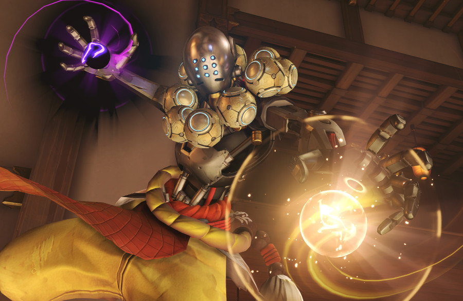

젠야타

능력
- 파괴의 구슬
파괴적인 힘이 담긴 구슬을 던집니다. 구슬은 하나를 던질 수도 있고, 몇 초 동안 힘을 모았다가 여럿을 빠르게 던질 수도 있습니다.
장탄 수: 20발
재장전: 2초
[공격속도]
단발: 초당 2.6회
충전: 초당 0.3~1회
[공격력]
단발: 46(DPS:119.6)
충전: 구슬 하나당 46(최대 5개 충전)
[탄속]
66.6 m/s
치명타 판정: 있음
- Q-초월
잠시 동안 현세를 초월한 존재가 됩니다. 이 시간 동안 모든 피해에 면역이 되며 자동으로 자신 및 주위 아군의 생명력을 회복시키지만, 다른 능력이나 무기는 사용할 수 없습니다.
궁극기 충전량: 약 2075
회복량: 초당 300
지속시간: 6초
이동속도 증가: 100%
범위: 반경 10m(바닥에 보이는 노란색 원이 사정거리이다)